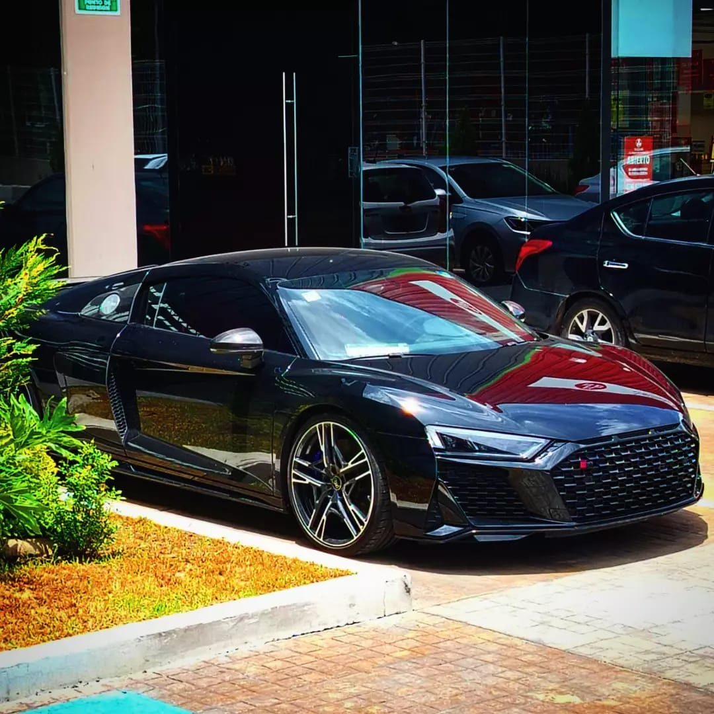

EL PROYECTO
FuentesRD Spotter nace en Puebla como una respuesta a la falta de identidad en la fotografía automotriz. Aquí no solo vemos máquinas; entendemos la ingeniería y la agresividad de cada diseño.

EL COMUNICADOR
Diego Fuentes. Técnico programador y estudiante de Comunicación en la BUAP. Mi misión es transformar la pasión por los superdeportivos en un lenguaje visual que imponga y conecte.